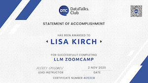
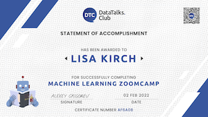

Senior Data Scientist | Generative AI, LLMs, RAG & Applied ML | Research-to-Prototype Specialist
I am a solutions-oriented Data Scientist with over 20 years of experience designing and delivering machine learning and AI systems across academic, government, and Fortune 500 environments. My work focuses on translating complex data and emerging technologies into practical, reliable solutions that support real-world decision-making.
I build end-to-end AI systems using modern approaches including large language models, prompt engineering, computer vision, graph analytics, and geospatial data science. I combine strategic thinking with hands-on technical execution to take projects from early concept through validation, deployment, and ongoing improvement.
My strengths include rapid learning, deep technical research, and staying current with evolving AI capabilities—from transformer architectures and multimodal models to responsible AI and security practices. I am equally effective working independently or leading cross-functional collaborations, mentoring colleagues, and establishing best practices.
I am committed to developing ethical, human-centered AI solutions that are transparent, maintainable, and aligned with organizational goals. I look forward to contributing to teams that value thoughtful innovation and long-term impact.
End-to-end Retrieval-Augmented Generation system that uses Wikipedia to answer questions about space exploration with level-appropriate explanations and grounded citations, showcasing skills in RAG design, LLM orchestration, and prompt engineering. It demonstrates evaluation-aware Gen AI development by adapting responses to different user backgrounds and maintaining traceable sources.
Computer vision classification project that trains a model to distinguish normal scenes from smoke and fire, highlighting skills in image preprocessing, supervised learning, and model evaluation. It demonstrates practical ML deployment thinking by framing fire detection as a generalizable image-classification pipeline that could extend to domains like microplastics, land-use, or species identification.
Tabular ML project modeling whether an employee quits, demonstrating skills in feature engineering, classification algorithms, and handling imbalanced datasets. It applies data science to a real-world HR/people-analytics question, connecting model outputs to business impacts such as staffing, workload, and retention strategies.
Data product and analytics project that integrates heterogeneous energy and resource-usage data into a unified dashboard, showcasing skills in data integration, KPI design, and interactive visualization. It emphasizes applied data science for behavior change by turning consumption patterns into actionable recommendations, comparisons to peers, and scenario-based savings insights.
Completed intensive, project-based courses covering end-to-end ML workflows and LLM application development, with hands-on projects available in my repositories.

DataTalks.Club
Comprehensive course on building LLM applications including RAG systems, prompt engineering, vector databases, and evaluation techniques. Final project: ScienceSage RAG system.

DataTalks.Club
Hands-on ML engineering course covering supervised learning, deep learning, computer vision, model deployment, and MLOps. Final project: Fire detection computer vision model.
Email: lkirch@tanis.ai
GitHub: @lkirch
LinkedIn: Lisa Kirch